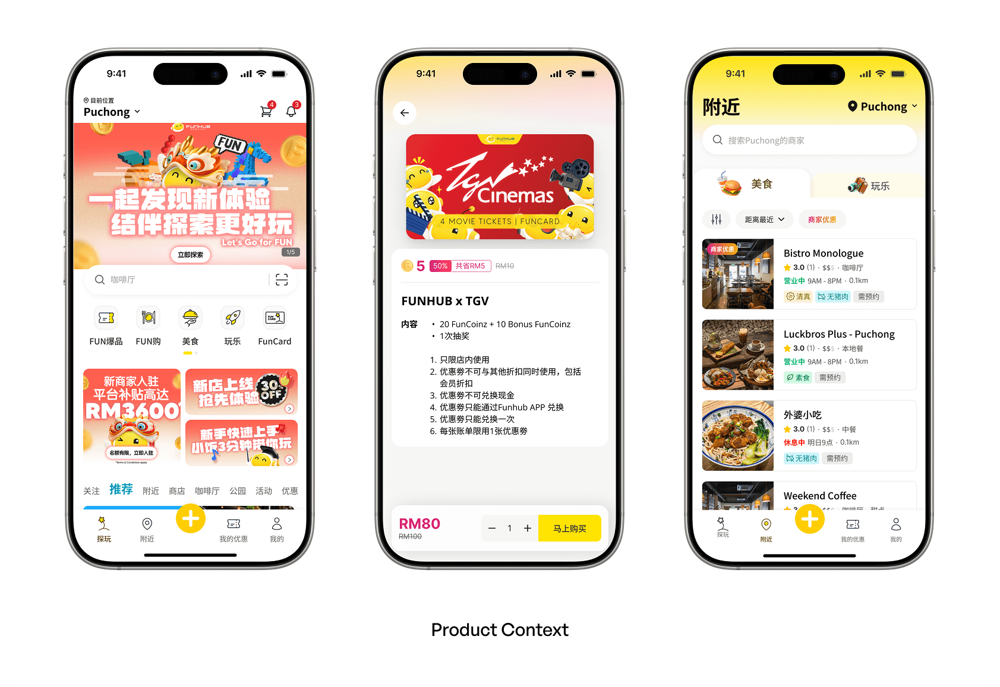
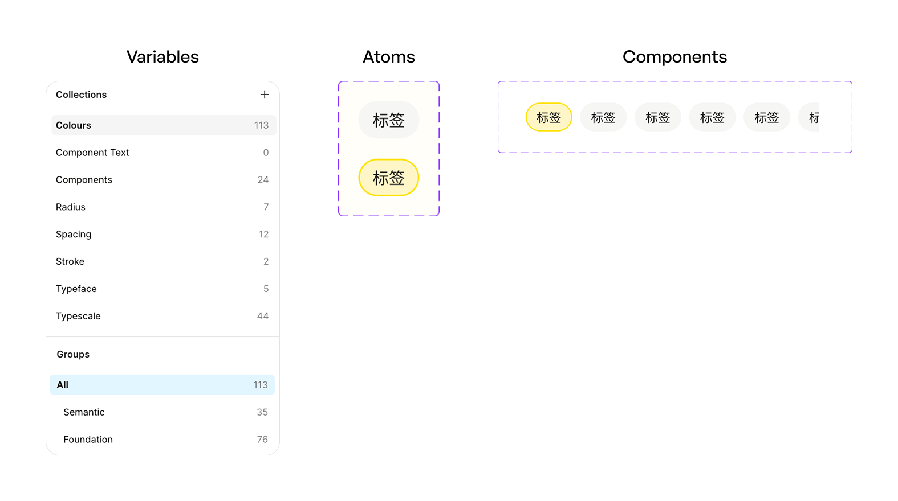
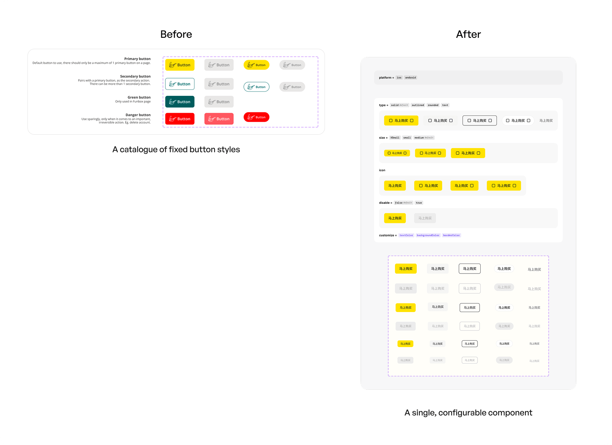
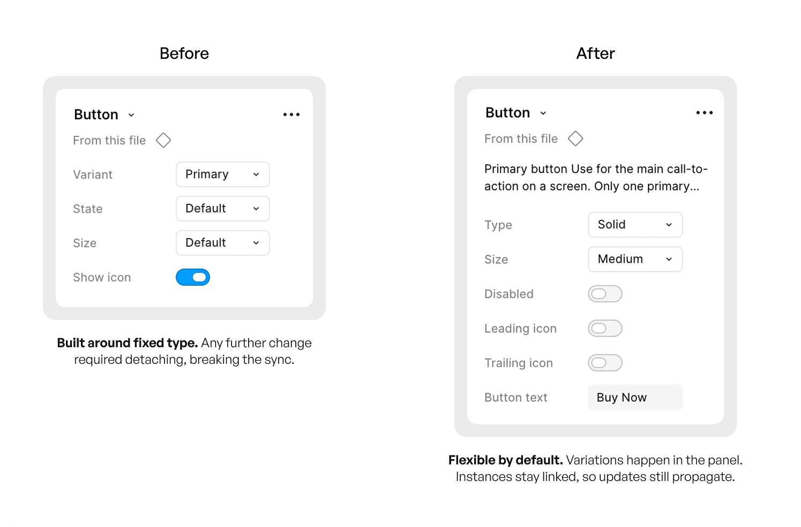

Overview專案概述
Funhub TV is a Malaysian entertainment and social commerce app — a content feed with a built-in shop and a virtual credit system called Funbox, earned by topping up (buying a FunCard) or completing missions in campaigns and events.
Funhub TV 是一款馬來西亞的娛樂與社交電商 App——內容動態牆結合內建商城，以及名為 Funbox 的虛擬點數系統，使用者可透過儲值(購買 FunCard)或完成活動任務來獲得。
As a small startup racing toward a full app revamp, there was one designer on the team: me. The existing design system had been built by a junior designer earlier on — and it was quietly holding everyone back. This project was about rebuilding it from the foundation up: variables first, then atoms, then components — right-sized for a one-designer startup rather than a textbook system.
作為一間正全力衝刺 App 全面改版的小型新創，團隊裡只有一位設計師:我。原有的設計系統是由一位資淺設計師早期建立的——而它正悄悄拖慢所有人的進度。這個專案的目標，是從最底層重新打造它:先變數、再原子元件、最後才是完整元件——並且是為「只有一位設計師的新創」量身打造，而不是照搬教科書上的做法。
Problem問題
When I picked up the project, the broken parts were immediate:
接手這個專案時，問題幾乎一眼就能看見:
Out of Date內容過時
Components no longer matched what was live in the app, so the library couldn’t be trusted as a reference.
元件已經與線上實際的 App 對不上，導致元件庫無法被當作可信的參考依據。
Awkward Variant Structure變體結構混亂
Swapping states and editing properties in Figma was clumsy and slow — friction on every single screen.
在 Figma 中切換狀態、修改屬性既笨拙又緩慢——每一個畫面都得付出這樣的摩擦成本。
Never Shared從未共享
The library lived in one design file, so engineering and the PM never touched it.
元件庫只存在於單一設計檔案中，工程師與產品經理因此從未使用過它。
No Variables沒有使用變數
Colour, type, and spacing were hard-coded into every component. There was no single place to change anything.
顏色、字體與間距全部寫死在每個元件裡，沒有任何一個地方能統一修改。
The first three were visible. The fourth was underneath all of them — and it was the one that mattered. Without variables, nothing in the system could change at scale. A design system is meant to make the work faster; this one did the opposite.
前三項是看得見的問題，第四項則潛藏在它們底下——而那才是真正關鍵的一項。沒有變數，系統裡的任何東西都無法一次性地被改動。設計系統的存在是為了讓工作更快，但這一套做的正好相反。
Goal目標
Build the Foundation It Never Had補上它從來沒有的地基
Put variables underneath everything, so a system-wide change — a colour, a spacing rule, a typeface — is one edit instead of a component-by-component slog.
先把變數鋪在所有東西底下，讓任何全域性的調整——換顏色、改間距、換字體——都只需要一次修改，而不是一個一個元件慢慢改。
Right-Size It So the Team Actually Uses It規模要剛好，團隊才會真的用
Keep the scope to what a lean team mid-delivery can absorb, turn the library from a private design file into something engineering and the PM can reference, and document it so it survives whoever joins next.
把範圍控制在「正在趕交付的精實團隊」能承受的程度，把元件庫從設計師的私人檔案變成工程師與產品經理都能查閱的資源，並留下文件，讓它能延續到下一位加入的人。
Discover and Define探索與定義
A Fast-Moving App With a Slow-Moving Library快速前進的 App，追不上的元件庫
I audited the component library — checking what was stale, duplicated, or most-used — and found the real problem: too many hard-coded values instead of shared tokens. That turned this from a cleanup into a full rebuild.
我以 App 實際上線的內容為基準盤點現有元件庫:哪些元件已經過期、哪些在不同檔案中重複、團隊最常使用哪些元件——以及最底層的那一項:有多少數值是直接寫死、而非引用而來的。最後這項發現改變了整個專案的定位:這不是一次整理，而是一次從地基開始的重建。

The Real Question真正的問題
A fully code-tokenized system is the end goal — but not the right move for where we were: a lean startup mid-revamp, delivering fast, with a developer who'd never worked with design systems. The real question wasn't how much system to build, but how much the team could actually absorb right now.
教科書上的做法，是先暫停一切，打造一套完整、連程式碼 token 都到位的系統。但在這裡那是錯的判斷。我們是正在交付中的精實新創，而且工程師從未使用過設計系統。真正的問題從來不是要建多大的系統，而是這個團隊能吸收多少。
How Might We我們可以如何
Give the system a real foundation, so system-wide changes take one edit, without pausing the revamp or overloading a team still new to design systems
在不中斷正在進行的改版、也不要求一個初次接觸設計系統的團隊承擔過多流程的前提下，如何補上系統從未擁有的地基，讓全域性的調整只需要改一次?
The Process解決方案探索
I scoped the system to what the team actually needed, and used the timing to my advantage: with every screen already being redesigned in the revamp, building the system alongside it cost far less than doing it separately.
我刻意把系統的範圍收斂到團隊真正需要的程度——並善用了時機。既然改版期間每個畫面本來就要重新設計，順著改版一起重建系統，成本遠低於把它當成獨立專案來做。
Foundation First: Variables → Atoms → Components地基優先:變數 → 原子元件 → 完整元件
I rebuilt the system in the order a system should be built: foundations before surface. That way, flexibility was designed in from the start instead of patched on later.
我依照一套系統本來就該有的順序重建它——先地基、後表層——讓彈性從一開始就被設計進去，而不是事後補救。
-
Variables變數
Colour, type, and spacing defined as Figma variables — one source of truth for every value in the system.
將顏色、字體與間距定義為 Figma 變數——系統中每一個數值都只有一個來源。
-
Atoms原子元件
The smallest pieces built first, in every state — so larger components inherit from them and stay in sync by construction.
先把最小的單位連同所有狀態一起做好——這樣較大的元件是繼承而來的，結構上自然保持同步。
-
Components完整元件
Composed from atoms, configured through properties. Variation happens in the panel — no detaching, no drift.
由原子元件組合而成，透過屬性設定變化。所有變化都在面板中完成——不需要 detach，也不會走樣。

The Payoff回報
With every value in a variable, changes are one edit — font, colour, spacing all update everywhere from a single source. The font swap that broke the old system became a non-issue.
變數就位之後，原本得一個一個元件慢慢改的換字體工程，變成只要改一個字體變數——所有元件與畫面立刻同步更新。地基替我把工作做完了。
Before and After改版前後對照
The rebuild wasn’t visual — it was structural. The clearest way to show it is one component, before and after.
這次重建改的不是外觀，而是結構。要說明這一點，最清楚的方式就是拿同一個元件來做前後對照。

From Fixed Types to One Configurable Component從固定款式，到單一可設定的元件

Why It Matters為什麼這件事重要
Detaching severs an instance from its master, so every detached button became dead weight that no longer received updates. Making variation a property instead of a workaround is the whole point of a design system, and it’s what the old setup couldn’t do.
Detach 會切斷實例與主元件的連結，因此每一個被 detach 的按鈕都成了不再接收更新的死角。把「變化」變成一種屬性、而不是一種變通做法，正是設計系統存在的意義——而這恰恰是舊架構做不到的事。
The Challenges挑戰
Challenge 1: Two Jobs at Once同時做兩份工
Throughout, I was building the system and delivering the revamp mockups in parallel — the foundation had to come together without stalling active design work.
整個過程中，我一邊建系統，一邊還要同時產出改版的視覺稿——地基必須在不拖慢當下設計工作的前提下逐步成形。
That’s exactly why the build order mattered. Variables and core atoms first meant the revamp screens could start consuming the system immediately, even as the rest of it was still being built. Shipping and systematising at the same time.
這正是建構順序如此重要的原因。先做好變數與核心原子元件，改版畫面就能立刻開始使用這套系統，即使其餘部分還在建置中。一邊交付，一邊把它系統化。
Challenge 2: The Hard Part Wasn’t the Components — It Was the People最難的不是元件，而是人
The Developer工程師
Had never used a design system. I introduced it gradually — basic guidelines first, not full adoption on day one.
從來沒用過設計系統。我採取漸進式導入——先從基本規範開始，而不是第一天就要求全面採用。
The PM產品經理
Saw it as low priority against delivery pressure. I made the efficiency case and won the space to keep building it in.
在交付壓力下認為這件事優先度不高。我從效率的角度說服他，爭取到繼續把系統做進去的空間。
Alongside that, I published the library so it was referable from every design file, and wrote a usage flow and guidelines so a future designer can pick it up and keep it current without me walking them through it.
除此之外，我也把元件庫發佈出去，讓每個設計檔案都能引用，並撰寫了使用流程與規範——讓未來的設計師不需要我一步步帶，也能接手並持續維護。
Outcome成果
For the Designer對設計師
Design changes update everywhere from one place, with documentation on how to use the system.
設計上的調整只要改一處就會全面更新，並附有系統的使用說明文件。
For Engineering對工程
Fewer design clarifications — the developer self-serves from the guidelines.
設計確認的往返變少——工程師能自行查閱規範。
For the Team對團隊
One source of truth everyone can point to — marketing, product, and engineering all pull from the same library instead of guessing.
一個所有人都能引用的單一真實來源——行銷、產品與工程都從同一套元件庫取用，不必再各自猜測。
Next Step後續步驟
This was intentionally a first maturity step, not a finish line. The roadmap from here:
這刻意只是成熟度的第一步，而不是終點。接下來的規劃:
Design Tokens in Code程式碼中的 Design Tokens
Carry the variables through to the build, once the team is comfortable with the component workflow.
等團隊熟悉元件工作流後，把變數一路延伸到實作端。
Dev Handoff Automation自動化開發交接
Tighten the link between the library and what actually ships.
讓元件庫與實際上線的成果連結更緊密。
A Contribution Process貢獻流程
So the system can grow with more than one designer maintaining it.
讓系統能在多位設計師共同維護下持續成長。
What I Learned我學到的
- Right-Sizing Beats Best Practice
The "correct" system on paper would have failed here. Scoping to what the team could absorb, and then improving later, was what made it stick. - 「合適的規模」勝過「最佳實務」
紙上「正確」的系統，在這裡反而會失敗。把範圍收斂到團隊能承受的程度、並刻意把其餘部分往後延，才是讓它真正被用起來的原因。 - Efficiency Starts With the Base
A strong base matters: without it, the whole system becomes messy and hard to work with, and efficiency suffers. Building variables and atoms early let the revamp screens use the system while it was still being built, and a font change became a one-line fix. - 建構順序決定了彈性
彈性沒辦法事後補上，它取決於你最先做了什麼。先做變數與原子元件，改版畫面才能在系統尚未完工時就開始使用它，而換字體也才會一直是一個「改一次」的決定。 - Adoption Is a Design Problem Too
The components were the easy part. Getting a developer and a PM to trust and use the system took gradual onboarding and an efficiency argument — not a mandate. - 導入本身也是一道設計題
元件是相對容易的部分。要讓工程師與產品經理信任並使用這套系統，靠的是漸進式的引導與效率上的說服，而不是命令。